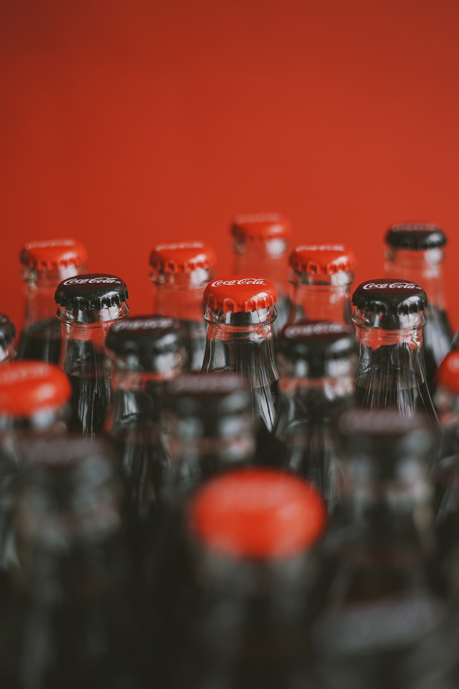

On May 8, 1886, Dr. John Pemberton brought his perfected syrup to Jacobs' Pharmacy
in downtown Atlanta where the first glass of Coca‑Cola was poured.
Serving about nine drinks per day in its first year, Coca‑Cola was an exciting
new drink in the beginning. |
 |